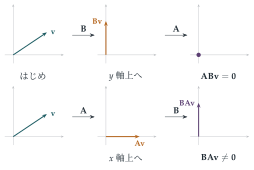

STEP II 1993、第6問
先に進む前に問題を読んでおこう。問題は STEP Support Programme の問題データベースにある： step.maths.org/questions/93-s2-q6
導入
行列（matrix）は足すことも掛けることもできるので、数と同じように扱いたくなる。この問題はその誘惑を試すものである。数については正しい四つの「規則」を挙げ、そのうちどれが行列でも成り立つかを問う。ほとんどは成り立たず、その成り立たなさ方から学ぶことは多い。行列の積は可換（commutative）ではない。零でない行列どうしの積が零になることがある。そして、行列についての二次方程式（quadratic equation）は無限に多くの解をもちうる。
これらの不成立は欠陥ではない。むしろ行列が役に立つ理由そのものである。行列は空間の変換を表し、二つの変換を異なる順序で行えば、実際に異なる結果が得られる。1925年、ハイゼンベルク（Werner Heisenberg）は、量子力学（quantum mechanics）に現れる量が数ではなく行列のようにふるまうこと、そして \(\mathbf{AB} = \mathbf{BA}\) が成り立たないことこそが不確定性原理（uncertainty principle）の数学的な姿であることを発見した。
取りかかる前に
実数について、\(ab = 0\) ならば \(a = 0\) または \(b = 0\) であるのはなぜか。その議論は数のどの性質を使っているか。また、その性質は行列でも成り立つか。
\(ab = 0\) かつ \(a \neq 0\) ならば、両辺を \(a\) で割って \(b = 0\) を得る。この議論には、零でないすべての数が逆数をもつことが必要である。零でない行列は逆行列（inverse）をもつとは限らない（行列式（determinant）が零の行列はもたない）ので、この議論は破綻する。幾何的な描像も念頭に置いておくとよい。行列は平面の変換であり、積 \(\mathbf{AB}\) は「まず \(\mathbf{B}\) を行い、次に \(\mathbf{A}\) を行う」ことを意味する。
順を追って解く
段階 1 \(\mathbf{AB} = \mathbf{0}\) だが \(\mathbf{BA} \neq \mathbf{0}\) となりうるか
幾何的に考えよう。\(\mathbf{B}\) がすべてを一本の直線の中へ送り、その直線を \(\mathbf{A}\) が零へ押しつぶすようにしたい。しかし逆の順序では、\(\mathbf{A}\) が残したものを \(\mathbf{B}\) がすべて消してしまってはいけない。
\(\mathbf{A} = \begin{pmatrix} 1 & 0 \\ 0 & 0 \end{pmatrix}\) とする。これは \(x\) 軸への射影（projection）であり、\(y\) 軸を零へ送る。また \(\mathbf{B} = \begin{pmatrix} 0 & 0 \\ 1 & 0 \end{pmatrix}\) とする。これは \((x, y)\) を \((0, x)\)、すなわち \(y\) 軸上へ送る。このとき \[\mathbf{AB} = \begin{pmatrix} 1 & 0 \\ 0 & 0 \end{pmatrix}\begin{pmatrix} 0 & 0 \\ 1 & 0 \end{pmatrix} = \begin{pmatrix} 0 & 0 \\ 0 & 0 \end{pmatrix}, \qquad \mathbf{BA} = \begin{pmatrix} 0 & 0 \\ 1 & 0 \end{pmatrix} \neq \mathbf{0}.\] よって、この主張は偽である（図 7.1.1）。■
段階 2 二乗の差
すべての積の順序を保ったまま、注意深く展開すると \[(\mathbf{A} - \mathbf{B})(\mathbf{A} + \mathbf{B}) = \mathbf{A}^2 + \mathbf{AB} - \mathbf{BA} - \mathbf{B}^2.\] これが \(\mathbf{A}^2 - \mathbf{B}^2\) に等しくなるのは、ちょうど \(\mathbf{AB} = \mathbf{BA}\) のときである。段階 1 の行列では \(\mathbf{AB} - \mathbf{BA} = -\mathbf{BA} \neq \mathbf{0}\) であるから、この主張は偽である。■
段階 3 \(\mathbf{AX} = \mathbf{0}\) の零でない解
\(\det\mathbf{A} \neq 0\) ならば、\(\mathbf{AX} = \mathbf{0}\) に対して何ができるか。\(\det\mathbf{A} = 0\) ならば、\(\mathbf{Av} = \mathbf{0}\) を満たす零でない列ベクトル \(\mathbf{v}\) を見つけられるか。
\(\det\mathbf{A} \neq 0\) ならば \(\mathbf{A}^{-1}\) が存在し、\(\mathbf{X} = \mathbf{A}^{-1}\mathbf{AX} = \mathbf{0}\) となる。したがって零でない解は存在しない。
\(\det\mathbf{A} = 0\) ならば、\(\mathbf{A} = \begin{pmatrix} a & b \\ c & d \end{pmatrix}\)、\(ad = bc\) と書ける。ベクトル \(\begin{pmatrix} b \\ -a \end{pmatrix}\) と \(\begin{pmatrix} d \\ -c \end{pmatrix}\) は \(\mathbf{A}\begin{pmatrix} b \\ -a \end{pmatrix} = \begin{pmatrix} ab - ba \\ cb - da \end{pmatrix} = \mathbf{0}\) を満たし、もう一方についても同様である。\(\mathbf{A} \neq \mathbf{0}\) であるから、少なくとも一方は零でない。それを \(\mathbf{v}\) とする。すると、二つの列がともに \(\mathbf{v}\) である行列 \(\mathbf{X}\) は零でなく、\(\mathbf{AX} = \mathbf{0}\) を満たす。よって、この主張は真である。■
段階 4 平方根はいくつあるか
\(\mathbf{X}^2 + \mathbf{AX} + \mathbf{B} = \mathbf{0}\) が無限に多くの解をもつような、零でない \(\mathbf{A}\) と \(\mathbf{B}\) を求めよ。（ヒント：左辺を完全平方 \((\mathbf{X} - \mathbf{I})^2\) にし、二乗すると零になる行列について考えよ。）
\(\mathbf{A} = -2\mathbf{I}\)、\(\mathbf{B} = \mathbf{I}\) とする。どちらも零ではない。方程式は \((\mathbf{X} - \mathbf{I})^2 = \mathbf{0}\) となる。\(\mathbf{N}^2 = \mathbf{0}\) を満たす任意の行列 \(\mathbf{N}\) から解 \(\mathbf{X} = \mathbf{I} + \mathbf{N}\) が得られ、そのような \(\mathbf{N}\) は無限に存在する。 \[\mathbf{N} = \begin{pmatrix} 0 & t \\ 0 & 0 \end{pmatrix}, \qquad \mathbf{N}^2 = \mathbf{0} \text{ ，任意の実数 } t.\] したがって、すべての \(t\) に対して \(\mathbf{X} = \begin{pmatrix} 1 & t \\ 0 & 1 \end{pmatrix}\) は解であり、この主張は偽である。■
振り返り
順序が重要である。どの展開でも積の順序を保たなければならない。\(\mathbf{AB}\) と \(\mathbf{BA}\) は通常異なる。
零因子。零でない行列どうしの積が零になりうる。このことが「二次方程式の根は高々二つ」という議論の根拠を崩す。
変換として考える。どの反例も、行列が平面に何をするかを思い描くことで容易に見つかった。

背後にある数学
ケイリー（Arthur Cayley）は1858年に行列の代数を導入し、行列を単なる係数の表ではなく、足したり掛けたりできる一つの対象として扱った。彼はすぐに積が可換でないことに気づき、ケイリー–ハミルトンの定理（Cayley–Hamilton theorem）を証明した。すなわち、すべての正方行列は自身の固有方程式（characteristic equation）を満たす。トレース（trace）が \(t\)、行列式が \(d\) である \(2 \times 2\) 行列については、これは \(\mathbf{M}^2 - t\mathbf{M} + d\mathbf{I} = \mathbf{0}\) を意味し、本章ではこの事実を繰り返し用いる（第 7.4 節）。\(2 \times 2\) 実行列の全体は環（ring）をなす。足し算、引き算、掛け算ができるが、掛け算は可換ではなく、零因子（zero divisor）、すなわち積が零になる零でない元が存在する。
無限に多くの平方根
段階 4 はさらに印象的にできる。方程式 \(\mathbf{X}^2 = \mathbf{I}\) は明らかな解 \(\pm\mathbf{I}\) をもつが、それだけでなく、原点を通る直線に関する平面のすべての鏡映（reflection）\(\mathbf{X} = \begin{pmatrix} \cos\theta & \sin\theta \\ \sin\theta & -\cos\theta \end{pmatrix}\) も解である。二回鏡映すれば何も変わらないからである。つまり \(\mathbf{I}\) の平方根が円周ひとつ分だけ存在する。数を係数とする \(n\) 次多項式の根が高々 \(n\) 個であるのは、数に零因子がないからである。行列には零因子があり、この個数の評価は成り立たなくなる。
物理学における非可換性
古典力学では、位置 \(x\) と運動量（momentum）\(p\) は数であり、\(xp = px\) である。量子力学ではこれらは演算子（operator、無限行列）となり、\(xp - px = \mathrm{i}\hbar\) を満たす。ここで \(\hbar\) はプランク定数（Planck’s constant）を \(2\pi\) で割ったものである。このただ一つの非可換関係から、ハイゼンベルクの不確定性原理、すなわち位置と運動量を同時に正確に知ることはできないという原理が導かれる。1925年にハイゼンベルクが量子力学の規則を発見したとき、彼は行列が何であるかを知らなかった。ハイゼンベルクが考案した奇妙な乗法の規則が行列の積であることに気づいたのは、マックス・ボルン（Max Born）であった。
思考のスキル
新しい種類の対象に出会ったら、なじみのある規則のうちどれがまだ成り立つかを確かめ、それぞれの規則がどの性質に依存しているのかを正確に突き止めよ。
「\(ab = 0\) ならば \(a = 0\) または \(b = 0\)」という規則は割り算に依存し、「\((a - b)(a + b) = a^2 - b^2\)」は可換性に依存する。それぞれの規則が何に支えられているかを知っていれば、いつまだそれを使えるかがわかる。
次の一歩
いつ可換になるか。\(\begin{pmatrix} 1 & 1 \\ 0 & 1 \end{pmatrix}\) と可換なすべての \(2 \times 2\) 行列を求めよ。
零の平方根。\(\mathbf{N}^2 = \mathbf{0}\) を満たすすべての \(2 \times 2\) 実行列 \(\mathbf{N}\) を求めよ。（ヒント：ケイリー–ハミルトンの定理を用いて \(\operatorname{tr}\mathbf{N} = \det\mathbf{N} = 0\) を示せ。）
鏡映。すべての鏡映行列 \(\begin{pmatrix} \cos\theta & \sin\theta \\ \sin\theta & -\cos\theta \end{pmatrix}\) の二乗が \(\mathbf{I}\) になることを示し、その鏡映の軸となる直線を求めよ。
ケイリー–ハミルトン。すべての \(2 \times 2\) 行列が \(\mathbf{M}^2 - (\operatorname{tr}\mathbf{M})\mathbf{M} + (\det\mathbf{M})\mathbf{I} = \mathbf{0}\) を満たすことを、直接計算によって証明せよ。
さらに学ぶために
Gilbert Strang, Introduction to Linear Algebra（Wellesley-Cambridge）。最も広く読まれている線形代数の入門書であり、理解を重視している。
Sheldon Axler, Linear Algebra Done Right（Springer、オンラインで無料公開）。行列よりも線形写像（linear map）を中心に据えた、より抽象的な取り組み方。
Jim Baggott, The Quantum Story（Oxford University Press）。ハイゼンベルクの行列力学を含む、量子力学の歴史。